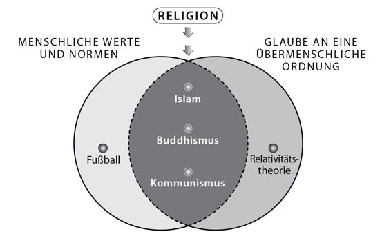

Kapitel 12
Das Gesetz der Religion
Auf dem mittelalterlichen Markt von Samarkand, einer Oasenstadt in der zentralasiatischen Wüste, prüften syrische Händler die Qualität feiner chinesischer Seide, wilde Steppenkrieger boten blonde Sklaven aus dem fernen Westen feil, und Händler zählten Goldmünzen mit exotischen Prägungen und den Konterfeis unbekannter Könige. In dieser Stadt, in der Handelswege aus Ost und West, Nord und Süd zusammenliefen, war die Vereinigung der Menschheit längst Alltag. Genau wie in der Armee von Kublai Khan, die sich im Jahr 1281 anschickte, Japan zu erobern. In Fell und Leder gekleidete mongolische Reiter drängten sich zwischen chinesischen Fußsoldaten mit ihren spitzen Bambushüten, betrunkene koreanische Söldner prügelten sich mit tätowierten indonesischen Seefahrern, und Männer aus Zentralasien lauschten gebannt den Geschichten über europäische Abenteurer, die alle dem Befehl eines einzigen Kaisers unterstanden.
Im Westen der arabischen Halbinsel vereinigte sich zur gleichen Zeit die Menschheit unter einem ganz anderen Vorzeichen. Wenn Sie um das Jahr 1300 als Pilger nach Mekka gekommen wären, um dort die Kaaba, den heiligsten Schrein des Islam, zu umrunden, wären Sie dort Gruppen aus Mesopotamien in wallenden Gewändern begegnet, die ekstatisch die 99 Namen Gottes beteten. Vor Ihnen hätte sich ein türkischer Patriarch von der zentralasiatischen Steppe auf seinen Stab gestützt. Neben Ihnen wäre eine Gruppe Muslime aus dem afrikanischen Königreich Mali gegangen, auf deren schwarzer Haut goldenes Geschmeide leuchtete. Und am Aroma von Nelken, Kurkuma und Kardamom hätten sie Glaubensbrüder erkannt, die aus Indien oder von den geheimnisvollen Gewürzinseln weiter im Osten kamen.
Heute gilt Religion oft als Inbegriff für Ausgrenzung, Streit und Hass. Doch die Religion war die dritte große Kraft, die zur Einigung der Menschheit beitrug. Da alle gesellschaftlichen Ordnungen von Menschen erfunden werden, sind sie zerbrechlich, und je größer eine Gesellschaft, umso zerbrechlicher sind sie. Den Religionen kam eine zentrale Aufgabe zu, weil sie diese zerbrechlichen Ordnungen legitimieren, indem sie auf einen übermenschlichen Willen verwiesen. Die Religionen behaupten nämlich, dass unsere Gesetze nicht etwa einer menschlichen Laune entspringen, sondern von einer absoluten Autorität angeordnet wurden. Auf dieser Grundlage lassen sich einige Prinzipien formulieren, die nicht in Zweifel gezogen werden können und der Gesellschaft ein stabiles Fundament geben.
Eine Religion lässt sich also als ein System von menschlichen Normen und Werten definieren, die sich auf den Glauben an eine übermenschliche Ordnung stützen. Diese Definition besteht aus zwei Teilen:
1. Religionen glauben an eine übermenschliche Ordnung, die keinen menschlichen Launen entspringt und nicht auf menschliche Vereinbarungen zurückgeht. Profifußball ist keine Religion, denn obwohl er seine eigenen Gesetze und oftmals bizarren Rituale hat, wurde der Sport von Menschen erfunden und die FIFA könnte jederzeit das Tor größer machen oder die Abseitsregel abschaffen.
2. Auf Grundlage dieser übermenschlichen Ordnung stellt die Religion Normen und Werte auf, die ihrer Ansicht nach bindend sind. Im Westen glauben heute viele Menschen an Geister, Elfen oder die Wiedergeburt, doch von diesem Glauben gehen keine allgemein verbindlichen Werte oder Verhaltensregeln aus, weshalb man nicht von einer Religion sprechen kann.
Eine Religion kann also als Legitimation für eine gesellschaftliche und politische Ordnung dienen, aber nicht jede Religion hat diese Möglichkeit genutzt. Um eine große Region mit sehr unterschiedlichen Bevölkerungsgruppen einen zu können, muss eine Religion zwei Eigenschaften mitbringen: Erstens muss sie den Anspruch erheben, eine für alle Menschen verbindliche Ordnung zu sein, die immer und überall wahr ist, und zweitens muss sie darauf bestehen, diesen Glauben an alle Menschen weiterzugeben. Das heißt, sie muss universell sein und sie muss sich missionarisch betätigen.
Die großen Weltreligionen der Geschichte, zum Beispiel der Islam, das Christentum und der Buddhismus, sind missionierende Universalreligionen, und daher glauben viele Menschen, dass alle Religionen diese Eigenschaften haben müssen. In Wirklichkeit waren in der Vergangenheit die allermeisten Religionen auf überschaubare Regionen und Gruppen beschränkt. Nach allem, was wir heute wissen, kamen die missionierenden Universalreligionen erst im ersten Jahrtausend vor unserer Zeitrechnung auf. Ihre Entstehung war eine der bedeutendsten Revolutionen der Geschichte und leistete einen entscheidenden Beitrag zur Vereinigung der Menschheit, genau wie die Imperien und das Geld.
Das Schweigen der Lämmer
Nach unserem heutigen Kenntnisstand waren die Jäger und Sammler Animisten. Sie glaubten, dass es auf der Welt nicht nur Menschen gibt, sondern zahlreiche andere Lebewesen, von denen jedes seine eigenen Persönlichkeiten, Bedürfnisse und Wünsche hatte. Daher mussten die menschlichen Normen und Werte auch die Interessen dieser anderen Wesen repräsentieren. Beispielsweise könnte eine Gruppe von Wildbeutern am Indus eine Regel aufgestellt haben, nach der es den Angehörigen der Gruppe verboten war, einen besonders großen Feigenbaum zu fällen, um den Geist dieses Baums nicht zu verärgern und seinen Zorn auf sich zu ziehen. Eine andere Gruppe am Ganges könnte die Regel aufgestellt haben, nach der die Jagd auf Füchse mit weißen Schwänzen verboten war, da ein Fuchs mit einem weißen Schwanz einmal einer weisen alten Frau erschienen war und ihr verraten hatte, wo ihr Klan wertvollen Obsidian finden konnte.
Die Vorstellungen dieser Religionen bezogen sich ausschließlich auf den Lebensraum einer Gruppe und auf die einmaligen Eigenschaften jedes Ortes, jeder Jahreszeit und jeder Naturerscheinung. Die meisten Jäger und Sammler verbrachten ihr gesamtes Leben in einem höchstens einige Hundert Quadratkilometer großen Territorium. Um zu überleben, mussten die Bewohner eines Tals die übermenschliche Ordnung kennen, die ihr Tal beherrschte, und ihr Verhalten darauf einstellen. Es hätte wenig Sinn gehabt, die Bewohner des Nachbartals davon überzeugen zu wollen, nach denselben Regeln zu leben. Die Menschen am Ganges machten sich nicht die Mühe, Missionare an den Indus zu entsenden, um die Menschen dort von der Jagd auf Füchse mit weißen Schwänzen abzuhalten.
Die landwirtschaftliche Revolution ging offenbar Hand in Hand mit einer religiösen Revolution. Die Wildbeuter jagten wild lebende Tiere und sammelten wild wachsende Pflanzen, die dem Homo sapiens ebenbürtig waren. Sie jagten zwar Schafe, doch sie betrachteten die Schafe deshalb noch lange nicht als minderwertige Wesen, genauso wenig wie sie glaubten, dass sie selbst weniger wert waren als die Tiger, nur weil sie von diesen gejagt wurden. Lebewesen kommunizierten direkt miteinander und handelten die Regeln aus, die in ihrem gemeinsamen Lebensraum herrschten. Im Gegensatz dazu lebten die Bauern davon, Tiere und Pflanzen zu besitzen und zu manipulieren, weshalb es ihnen schwerfiel, Tiere und Pflanzen als ebenbürtig zu begreifen oder gar mit ihnen zu verhandeln. Im Laufe der landwirtschaftlichen Revolution wurden die einst gleichberechtigten spirituellen Partner daher zu stummen Besitzgütern.
Dies führte jedoch zu einem Problem. Ein Bauer hätte sich natürlich gewünscht, seine Schafe völlig beherrschen zu können, doch er wusste, dass das unmöglich war. Er konnte sie zwar einsperren, einige wenige Widder zur Zucht auswählen und die übrigen kastrieren, aber er hatte keinen Einfluss darauf, dass ein Schaf ein gesundes Lamm zur Welt brachte und die Herde von Krankheiten verschont blieb. Wie konnte er die Fruchtbarkeit seiner Herde sicherstellen?
Auf der Suche nach einer Lösung wandten sich mehr und mehr Bauern an die Götter. Als die Pflanzen und Tiere das Sprechen verlernten, betraten die Fruchtbarkeitsgöttin, der Himmelsgott und der Gott der Medizin die Bühne, um zwischen den Menschen und den nun stummen Tieren und Pflanzen zu vermitteln. Die antiken Religionen sind oft nichts anderes als ein Vertrag, in dem die Menschen den Göttern Anbetung versprechen, wenn sie sich im Gegenzug die Erde untertan machen dürfen – die ersten Kapitel des Alten Testaments sind ein hervorragendes Beispiel dafür. Nach der landwirtschaftlichen Revolution bestanden religiöse Zeremonien vor allem darin, den Göttern Lämmer, Wein und Gebäck zu opfern, um im Gegenzug reiche Ernten und fruchtbare Herden zu erhalten.
Die landwirtschaftliche Revolution hatte zunächst kaum Konsequenzen für die anderen Angehörigen des animistischen Systems, zum Beispiel Felsen, Quellen, Geister und Dämonen. Allmählich verloren aber auch diese gegenüber den neuen Göttern an Boden. So lange die Menschen ihr Leben lang in einem kleinen Territorium von einigen Hundert Quadratkilometern lebten, reichten die örtlichen Geister völlig aus, um ihre Bedürfnisse zu befriedigen. Doch mit der Entstehung von Weltreichen und Handelsnetzen mussten die Menschen mit Kräften kommunizieren, deren Macht weit über ihr Heimattal hinausreichte.
Um dieses Bedürfnis zu befriedigen, wurden polytheistische Religionen geschaffen. Diese Religionen glaubten, die Welt werde von mächtigen Gottheiten beherrscht, zum Beispiel Fruchtbarkeits-, Regen- und Kriegsgottheiten. Diese konnten die Menschen um Hilfe bitten, und wenn den Göttern die Opfer gefielen, ließen sie sich herab, den Menschen Fruchtbarkeit, Regen und Siege zu bringen.
Mit dem Aufkommen des Polytheismus verschwanden die animistischen Religionen noch nicht sofort. Dämonen, Feen, Geister, heilige Steine und Bäume gehörten nach wie vor zum Personal polytheistischer Religionen. Zwar verloren diese Geister gegenüber den Göttern an Bedeutung, doch im Alltag der Menschen reichten sie meist aus. Während der König in seinem Palast dem Kriegsgott ein Dutzend fetter Hammel opferte, um einen Feldzug zu gewinnen, zündete der Bauer in seiner Hütte eine Kerze an, um die Fee des Feigenbaums um Gesundheit für seinen Sohn zu bitten.
Doch so sehr sich der Aufstieg der Götter auf das Leben der Schafe und Dämonen auswirkte, die größten Konsequenzen hatte er für den Status des Homo sapiens selbst. Für Animisten war der Mensch nur eines von vielen Lebewesen, die auf der Erde lebten. Polytheisten sahen die Welt dagegen zunehmend als Spiegelbild der Beziehung zwischen Göttern und Menschen. Unsere Gebete und Opfer, unsere Sünden und guten Taten beeinflussten das Schicksal des gesamten Ökosystems. Nur weil ein paar Menschen eine Dummheit begingen und die Götter verärgerten, könnte eine schreckliche Flut Milliarden von Ameisen, Grashüpfern, Schildkröten, Antilopen, Giraffen und Elefanten auslöschen. Der Polytheismus hob also nicht nur die Götter auf den Thron, sondern auch den Menschen. Weniger gesegnete Angehörige der alten animistischen Kulturen verloren dagegen ihren Status und verwandelten sich in sprachlose Statisten. Sie wurden zur Kulisse im großen Drama von Menschen und Göttern.
Was der Götzendienst bringt
Nach zwei Jahrtausenden der Hirnwäsche durch die monotheistischen Religionen halten die meisten Menschen im Westen die Vielgötterei für dummen und kindischen Aberglauben. Das ist jedoch ein sehr ungerechtes Vorurteil. Um der inneren Logik des Polytheismus auf die Spur zu kommen, müssen wir die Logik hinter dem vermeintlichen Götzendienst verstehen.
Der Polytheismus bestreitet gar nicht unbedingt, dass es ein einziges Gesetz oder eine einzige Macht gibt, die das gesamte Universum beherrscht. Im Gegenteil, die meisten polytheistischen und selbst animistische Religionen erkennen, dass hinter den verschiedenen Göttern, Dämonen und heiligen Steinen eine größere Macht steht. Im Polytheismus der klassischen griechischen Antike sind auch Zeus, Hera, Apollo und ihre göttlichen Kollegen einer allmächtigen und allumfassenden Macht unterworfen: den Moiren, wie die Schicksalgöttinnen hießen, und Ananke, dem unpersönlichen Prinzip des Schicksals. Auch die Götter des germanischen Pantheons waren dem Schicksal unterworfen und gingen schließlich in der Götterdämmerung unter. In der polytheistischen Religion der westafrikanischen Yoruba waren alle Götter Kinder des obersten Gottes Olodumare und blieben seine Untertanen. Im hinduistischen Polytheismus beherrscht die Weltseele Atman sämtliche Götter, Geister und Menschen sowie die belebte und unbelebte Welt. Atman ist das unvergängliche Wesen des Universums sowie aller Lebewesen und Phänomene.
Polytheistische Religionen gehen jedoch von einer grundlegenden Erkenntnis aus, die sie von monotheistischen Religionen unterscheidet. Die höchste Macht des Universums hat keinerlei Vorlieben und interessiert sich nicht für die Wünsche, Sorgen und Nöte der Menschen. Es wäre völlig sinnlos, diese Macht um den Sieg in einer Schlacht, Gesundheit oder Regen zu bitten, da es aus ihrer allumfassenden Sicht vollkommen unerheblich ist, ob ein beliebiger König einen Krieg gewinnt oder verliert, ob sich ein Mensch von einer Krankheit erholt oder stirbt, oder ob ein Reich expandiert oder zusammenbricht. Daher machten sich die Griechen gar nicht erst die Mühe, den Schicksalsgöttinnen Opfer zu bringen, und die Hindus errichten keine Tempel für Atman.
Diese oberste Macht anzusprechen, wäre nur dann sinnvoll, wenn man alle irdischen Bedürfnisse hinter sich lässt und die Wirklichkeit so annimmt, wie sie ist – mit ihren Rückschlägen und Niederlagen, mit Armut, Krankheit und Tod. Einige Hindus, die sogenannten Sadhus oder Sannyasins, weihen ihr Leben der Vereinigung mit der Weltseele, durch die sie die Erleuchtung erlangen. Ihr Ziel besteht darin, die Welt aus der Sicht von Atman zu sehen und die Sinnlosigkeit aller Begierden und Ängste zu erkennen. Die meisten Hindus sind jedoch keine Sadhus. Sie stecken bis zum Hals im Morast der irdischen Nöte, und dort hilft ihnen Atman recht wenig. Um in diesen weltlichen Angelegenheiten nicht allein zu sein, wenden sie sich an die Götter. Gerade weil Götter wie Ganesha, Lakshmi oder Saraswati nur über sehr eingeschränkte Macht verfügen, sind sie voreingenommen und haben ihre eigenen Interessen. Daher können die Menschen Händel mit ihnen machen und ihnen Opfer bringen, um Schlachten zu gewinnen oder von Krankheiten zu genesen.
Genau das ist die entscheidende Erkenntnis der polytheistischen Religionen: Die höchste Macht des Universums hat keinerlei Interessen; wenn wir bei der Lösung unserer irdischen Probleme Unterstützung benötigen, müssen wir uns an unvollkommene Mächte wenden, die sich beeinflussen lassen. Von diesen weniger mächtigen Göttern gibt es natürlich eine ganze Menge, denn wenn man die Allmacht eines obersten Prinzips aufteilt, erhält man natürlich mehr als eine Gottheit. Daher die Vielzahl der Götter.
Diese Erkenntnis macht in religiösen Dingen tolerant. Da Polytheisten einerseits an eine interesselose höchste Macht glauben und auf der anderen an eine Vielzahl von Untergottheiten, fällt es ihnen nicht weiter schwer zu glauben, dass neben den ihren auch noch andere Götter existieren können. Der Polytheismus ist daher an sich tolerant und verfolgt nur selten »Ketzer« und »Ungläubige«.
Selbst wenn Polytheisten große Reiche eroberten, versuchten sie nicht, ihre Untertanen zu ihren Göttern zu bekehren. Die Ägypter, Römer und Azteken schickten keine Missionare in ferne Provinzen, um den Kult von Osiris, Jupiter oder Huitzilopochtli (dem Hauptgott der Azteken) zu verbreiten, und sie entsandten zu diesem Zweck schon gar keine Armeen. Die unterworfenen Völker mussten zwar die Götter und Rituale des Imperiums respektieren, da diese das Imperium beschützten und ihm seine Legitimation gaben. Doch ihre eigenen Götter und Rituale mussten sie deswegen nicht aufgeben. Unter der Herrschaft der Azteken mussten die unterworfenen Völker zwar Tempel für Huitzilopochtli errichten, doch diese Tempel standen neben denen der eigenen Stammesgötter. In vielen Fällen nahm die Elite des Imperiums sogar die Götter und Rituale unterworfener Völker an. Die Römer nahmen beispielsweise die asiatische Göttin Cybele oder die ägyptische Göttin Isis in ihren Götterhimmel auf.
Der einzige Gott, den die Römer lange Zeit nicht duldeten, war der monotheistische und missionierende Gott der Christen. Die Römer verlangten gar nicht, dass die Christen ihren Glauben aufgaben, sie erwarteten nur, dass sie die römischen Götter und die Göttlichkeit des Kaisers anerkannten. Erst als die Christen sich weigerten und keine Kompromisse eingehen wollten, verfolgten die Römer diese Minderheit, und auch nur, weil sie in ihr eine politische Bedrohung sahen. Doch selbst dann gingen sie eher halbherzig gegen die Rebellen vor. In den drei Jahrhunderten, die zwischen der Kreuzigung Jesu Christi und der Bekehrung von Kaiser Konstantin vergingen, befahlen die römischen Kaiser lediglich vier organisierte Christenverfolgungen. Hin und wieder führten zwar Provinzstatthalter und Gouverneure auf eigene Faust Pogrome durch. Doch wenn man sämtliche Opfer aller Christenverfolgungen zusammenrechnet, stellt man fest, dass die polytheistischen Römer in diesen drei Jahrhunderten lediglich einige Tausend Christen ermordeten.68 Zum Vergleich: In den kommenden anderthalb Jahrtausenden schlachteten sich die Christen gegenseitig zu Millionen ab, weil sie die Lehre der Nächstenliebe in einigen Detailfragen unterschiedlich interpretierten.
Besonders berüchtigt waren die Religionskriege zwischen katholischen und protestantischen Christen, die im 16. und 17. Jahrhundert Europa in Schutt und Asche legten. Jede der beiden Seiten glaubte an Jesus und seine Botschaft der Liebe. Doch sie konnten sich nicht einigen, wie diese Liebe aussehen sollte. Die Protestanten waren der Ansicht, Gott habe die Menschen so sehr geliebt, dass er Mensch geworden sei und Folter und Tod auf sich genommen habe, um die Menschen von ihrer Erbschuld zu erlösen und den Gläubigen das Tor zum Himmelreich aufzustoßen. Die Katholiken stimmten dem völlig zu, doch ihrer Ansicht nach mussten die Menschen selbst etwas dazu beitragen, um in den Himmel zu kommen: Sie mussten beichten, die Messe besuchen und gute Taten vollbringen. Die Protestanten widersprachen heftig, weil sie meinten, dieser Tauschhandel schmälere Gottes Größe und Liebe. Wer glaube, den Eintritt ins Himmelreich mit guten Taten erkaufen zu können, der mache sich nur wichtig und behaupte, Gottes Liebe sei nicht ausreichend.
Die theologische Debatte wurde mit derartigem Eifer geführt, dass sich Katholiken und Protestanten im 16. und 17. Jahrhundert zu Hunderttausenden töteten. Am 23. August 1572 überfielen französische Katholiken, die an die guten Taten glaubten, die französischen Protestanten, die an Gottes Liebe zu den Menschen glaubten. Bei diesem Pogrom, der sogenannten Bartholomäusnacht, wurden innerhalb von 24 Stunden zwischen 5000 und 10000 Protestanten dahingemetzelt. Als der Papst die Nachricht aus Frankreich erhielt, war er derart begeistert, dass er Dankesgebete abhalten ließ und den Maler Giorgio Vasari beauftragte, einen Raum des Vatikans mit Darstellungen des Massakers auszumalen (dieser Raum ist heute für Besucher geschlossen).69 Allein in diesen 24 Stunden töteten Christen mehr Christen als das polytheistische Römische Reich in allen Christenverfolgungen zusammen.
Der eine Gott
Die Polytheisten hatten erkannt, dass sich die höchste Macht des Universums nicht für ihre Probleme interessierte. Im Laufe der Zeit kamen die Anhänger einiger polytheistischer Religionen jedoch von dieser Erkenntnis ab und begannen zu glauben, dass diese Macht sich doch für irdische Belange interessieren könnte. Sie helfe den einen und bestrafe die anderen. Bestimmte Handlungen erfreuten und andere verärgerten sie. Manche Orte und Zeiten seien ihr heilig, andere missfielen ihr. So entstanden allmählich die sogenannten monotheistischen Religionen (vom Griechischen mono für »eins« und theos für »Gott«). Ihre Anhänger wandten sich an die oberste Macht des Universums, um von Krankheiten zu genesen, im Lotto zu gewinnen oder im Krieg den Sieg davonzutragen.
Die erste bekannte monotheistische Religion betrat im Jahr 1350 vor unserer Zeitrechnung die Bühne, als der ägyptische Pharao Echnaton den Gott Aten, eine eher unbedeutende Gottheit im ägyptischen Götterhimmel, zum uneingeschränkten Herrscher des Universums erklärte. Echnaton erhob den Aten-Kult zur Staatsreligion und versuchte, die Kulte der anderen Götter zu unterdrücken. Seine religiöse Revolution schlug jedoch gründlich fehl: Nach Echnatons Tod wurde der Aten-Kult zugunsten der Vielgötterei wieder begraben.
Auch andere polytheistische Religionen brachten hier und da monotheistische Religionen hervor. Diese blieben jedoch eine Randerscheinung, vor allem weil sie ihre eigene Botschaft nicht verdauten. Das Judentum behauptet beispielsweise, dass sich die höchste Macht des Universums für irdische Belange interessiere, doch diese Belange beschränkten sich auf das kleine Volk der Juden und den schmalen Landstrich Israel. Den Angehörigen anderer Völker hat die jüdische Religion nichts zu bieten, weshalb ihre Anhänger auch niemanden bekehren wollen. Diese Phase könnte man als »regionalen Monotheismus« bezeichnen.
Der Durchbruch kam erst mit dem Christentum. Diese Religion begann ihre Laufbahn als esoterische jüdische Sekte, deren Anhänger die Juden davon überzeugen wollten, dass ihr Prophet Jesus von Nazareth ein lange erwarteter Erlöser namens »Messias« war. Doch einer der ersten Sektenführer, ein gewisser Paulus von Tarsus, erklärte, wenn sich die höchste Macht des Universums schon die Mühe machte, menschliche Gestalt anzunehmen und sich zur Erlösung der Menschheit ans Kreuz schlagen zu lassen, dann sei das doch etwas, das alle Menschen angehe, nicht nur die Juden. Daraus folgerte er, dass die Christen den Glauben an Jesus und seinen Vater in aller Welt verbreiten mussten.
Seine Worte fielen auf fruchtbaren Grund. Die Christen spezialisierten sich auf die Missionierung der gesamten Menschheit. In einer der erstaunlichsten Wendungen der Menschheitsgeschichte gelang es dieser kleinen jüdischen Sekte, die Herrschaft über das mächtige Römische Weltreich zu erlangen.
Der Erfolg der Christen wurde zum Vorbild für eine andere monotheistische Religion, die im 7. Jahrhundert auf der arabischen Halbinsel aufkam: den Islam. Wie das Christentum begann der Islam als eine kleine Sekte in einem abgelegenen Winkel der Welt, aber in einer noch erstaunlicheren Wende ließ diese Sekte innerhalb kürzester Zeit die arabische Wüste hinter sich und eroberte ein Weltreich, das vom Atlantik bis zum Indischen Ozean reichte. Seither gehören monotheistische Religionen zu den Protagonisten der Weltgeschichte.
Karte 4. Die Ausbreitung von Christentum und Islam
Monotheisten sind in der Regel sehr viel fanatischer als Polytheisten und legen einen gewaltigen missionarischen Eifer an den Tag. Wenn eine Religion andere Religionen neben sich dulden würde, dann würde das entweder bedeuten, dass ihr Gott nicht das mächtigste Wesen des Universums ist, oder dass dieser Gott ihr einen Teil der universellen Wahrheit vorenthalten hat. Da Monotheisten überzeugt sind, dass sie die vollständige Botschaft des einen wahren Gottes erhalten haben, fühlten sie sich genötigt, allen anderen Religionen die Existenzberechtigung abzusprechen. Im Laufe der letzten zwei Jahrtausende haben monotheistische Religionen daher alles getan, um ihre Konkurrenten aus dem Weg zu räumen.
Damit waren sie sehr erfolgreich. Zu Beginn des ersten Jahrhunderts unserer Zeitrechnung gab es kaum Monotheisten. Um das Jahr 500 war mit dem Römischen Reich eines der größten Staatswesen der Welt zum christlichen Glauben bekehrt, und Missionare trugen das Kreuz in alle Himmelsrichtungen. Um das Jahr 1000 waren die meisten Menschen in Europa, Westasien und Nordafrika Monotheisten, und vom Atlantik bis zum Himalaja legitimierten sich mehrere Riesenreiche mit Verweis auf die Existenz eines einzigen, allmächtigen Gottes. Zu Beginn des 16. Jahrhunderts beherrschten monotheistische Religionen den größten Teil Afrikas und Eurasiens, mit Ausnahme Ostasiens und des südlichen Afrikas, und sie begannen, ihre Tentakel nach Südafrika, Amerika und Ozeanien auszustrecken. Heute sind mit Ausnahme der Ostasiaten die meisten Menschen Anhänger der einen oder anderen monotheistischen Religion und die weltpolitische Ordnung steht fest auf monotheistischen Füßen.
Aber genau wie der Animismus im Polytheismus überlebte, überlebte der Polytheismus im Monotheismus. Eigentlich müsste man annehmen, dass ein Mensch, der zur höchsten Macht des Universums betet, keinen Grund mehr hat, weniger mächtige Götter um Hilfe anzurufen. Wer würde sich an einen kleinen Beamten wenden, wenn die Tür zum Büro der Kanzlerin offensteht? Tatsächlich leugnen monotheistische Religionen, dass es neben dem allmächtigen Gott noch andere Götter geben könnte, und verdammen alle dazu, im ewigen Höllenfeuer zu schmoren, die es wagen, sie anzurufen.
Zwischen den Theorien der Theologen und der Wirklichkeit tut sich allerdings schon immer ein tiefer Graben auf, denn den meisten Menschen fällt es schwer, den monotheistischen Gedanken bedingungslos zu schlucken. Für die meisten Menschen ist der allmächtige Gott einfach zu weit weg, um ihn mit ihren alltäglichen Nöten zu behelligen. Die monotheistischen Religionen vertrieben die anderen Götter mit großem Getöse, nur um sie zur Hintertür wieder hereinzulassen. So erfand beispielsweise das Christentum seinen eigenen Pantheon der Heiligen, deren Kulte sich kaum von denen der polytheistischen Götter unterscheiden.
Genau wie der Gott Jupiter das Römische Reich beschützte und Huitzilopochtli die Macht der Azteken, so hatte jeder christliche Kleinstaat seinen eigenen Schutzheiligen, der ihm durch alle Schwierigkeiten und Kriege zur Seite stand. England wurde vom Heiligen George unter die Fittiche genommen, Schottland vom Heiligen Andrew, Ungarn vom Heiligen Stefan und Deutschland von Erzengel Michael. Jede Stadt und jedes Dorf, jeder Beruf und jede Krankheit hatte einen Heiligen. Köln hatte die Heiligen Drei Könige, während der Heilige Markus Venedig behütete. Der Heilige Florian war der Patron der Schornsteinfeger und Feuerwehrleute, während der Heilige Matthäus den Steuereintreibern und Zollbeamten zur Hand ging. Bei Kopfschmerzen versprach die Heilige Aldegundis Linderung, während bei Zahnschmerzen die Heilige Apollonia die bessere Ansprechpartnerin war.
Die christlichen Heiligen hatten nicht nur große Ähnlichkeit mit den polytheistischen Göttern. Oft waren sie nichts anderes als heidnische Götter in der Verkleidung von christlichen Heiligen. Vor der Ankunft der Missionare war eine der wichtigsten Göttinnen der irischen Kelten eine gewisse Brigid. Im Zuge der Christianisierung trat auch Brigid zum christlichen Glauben über und wurde zur Heiligen Brigida, bis heute eine der meistverehrten Heiligen im katholischen Irland.
Der Kampf zwischen Gut und Böse
Aus dem Polytheismus gingen nicht nur monotheistische Religionen hervor, sondern auch dualistische. Letztere glauben an die Existenz zweier widerstreitender Kräfte: Gut und Böse. Anders als die Monotheisten glauben Dualisten, dass das Böse eine unabhängige Kraft ist, die nicht von Gott geschaffen wurde und diesem nicht untergeordnet ist. Der Dualismus erklärt die ganze Welt als Schlachtfeld zwischen diesen beiden Kräften, und alle Ereignisse der Welt sind Teil dieser Auseinandersetzung.
Der Dualismus ist eine attraktive Weltsicht, denn er bietet eine elegante Antwort auf das legendäre Problem des Bösen, das die Menschen seit Langem umtreibt. »Warum gibt es das Böse in der Welt? Warum gibt es Leid? Warum leiden auch gute Menschen?« Monotheisten haben erstaunliche geistige Verrenkungen vollführt, um zu erklären, wie ein allwissender, allmächtiger und allgütiger Gott so viel Leid zulassen kann. Eine Erklärung lautet, dass Gott den Menschen mit einem freien Willen ausgestattet habe. Wenn es das Böse nicht gäbe, dann könnten sich die Menschen nicht zwischen Gut und Böse entscheiden, und dann gäbe es auch keinen freien Willen. Diese Antwort wirft jedoch sofort eine ganze Reihe weiterer Fragen auf. Die Willensfreiheit erlaubt es dem Menschen, sich für das vermeintlich Böse zu entscheiden. Es gibt sogar viele Menschen, die sich dafür entscheiden und von Gott hart bestraft werden. Aber wenn Gott schon im Voraus weiß, welche Menschen ihren freien Willen nutzen, um sich für das Böse zu entscheiden und bis in alle Ewigkeit in der Hölle schmoren, warum erschafft er sie dann überhaupt? Theologen haben dicke Wälzer geschrieben, um diese und ähnliche Fragen zu beantworten. Egal was wir von ihren Antworten halten mögen, sicher ist jedenfalls, dass die Monotheisten ihre liebe Not mit dem Problem des Bösen haben.
Für Dualisten stellt sich diese Frage überhaupt nicht. Auch guten Menschen widerfährt Böses, weil die Welt nicht von einem allwissenden, allmächtigen und allgütigen Gott beherrscht wird. Es gibt eine eigenständige Macht des Bösen, und diese böse Macht tut eben Böses. Diese Erklärung ist so einfach und überzeugend, dass auch Monotheisten nach ihr greifen. Viele Christen, Muslime und Juden glauben an eine unabhängige böse Macht, die gegen den guten Gott kämpft und großen Schaden auf der Welt anrichtet. Viele Christen, Muslime und Juden glauben außerdem, dass der allgütige Gott im Kampf gegen den Teufel unsere Hilfe benötigt. Aber wie kommen Monotheisten dazu, an diese dualistischen Vorstellungen zu glauben? Rein logisch schließen sich die beiden aus: Entweder glauben wir an einen allmächtigen Gott oder an zwei widerstreitende, aber nicht allmächtige Kräfte. Aber Menschen verfügen über die wunderbare Fähigkeit, völlig widersprüchliche Dinge zu glauben, und daher schaffen es Abermillionen gläubiger Christen, Muslime und Juden spielend, gleichzeitig an einen allmächtigen Gott und einen unabhängigen Teufel zu glauben.
Die dualistische Sicht hat natürlich auch ihre Nachteile. Sie bietet zwar eine einfache Antwort auf die Frage nach dem Bösen, aber sie hat keine Antwort auf das Problem der Ordnung. Wenn es zwei widerstreitende Kräfte gibt, von denen eine gut und die andere böse ist, wer stellt dann die Regeln für den Kampf zwischen den beiden auf? Zwei rivalisierende Staaten können einander bekämpfen, weil es Raum und Zeit gibt und beide den Gesetzen der Physik unterliegen. Eine Rakete, die in Pakistan abgefeuert wird, kann Ziele in Indien treffen, weil in beiden Ländern die gleichen physikalischen Gesetze gelten. Aber wenn Gut und Böse miteinander kämpfen, welchen gemeinsamen Gesetzen sind beide unterworfen, und wer hat diese Gesetze aufgestellt?
Dualisten können also das Problem des Bösen erklären, nicht aber das Problem der Ordnung. Monotheisten können dagegen das Problem der Ordnung erklären, aber nicht das Problem des Bösen. Es gibt nur eine logische Antwort auf das Dilemma: Man könnte behaupten, dass es nur einen einzigen allmächtigen Gott gibt, der das gesamte Universum erschaffen hat, und dass dieser Gott böse ist. Allerdings verspürt bis heute kaum jemand Lust, an einen solchen Gott zu glauben.
*
Dualistische Religionen blühten ein Jahrtausend lang. Irgendwann vor 3500 oder 3000 Jahren wirkte in Zentralasien ein Prophet namens Zoroaster oder Zarathustra. Seine Predigten wurden von einer Generation zur nächsten weitergegeben und entwickelten sich zur wichtigsten dualistischen Religion, dem Zoroastrismus. Die Anhänger dieser Religion sahen die Welt als kosmischen Kampf zwischen dem guten Gott Ahura Mazda und dem bösen Gott Angra Mainyu. Die Menschen mussten dem guten Gott in seinem Kampf beistehen. Der Zoroastrismus war eine der zentralen Religionen im Altpersischen Reich (550 bis 350 v. u. Z.) und wurde im Neupersischen Reich (224 bis 651 u. Z.) sogar zur Staatsreligion. Er beeinflusste fast alle nachfolgenden Religionen des Nahen Ostens und Zentralasiens und färbte auf eine Reihe anderer dualistischer Religion wie die Gnosis und den Manichäismus ab.
Während des dritten und vierten Jahrhunderts unserer Zeitrechnung breitete sich der Manichäismus wie ein Buschfeuer von China bis nach Nordafrika aus. Einen Moment lang schien es, als könnte dieser Glaube zur Staatsreligion des Römischen Reichs werden, und nicht das Christentum. Doch die Manichäer verloren den Kampf um die Seele des Römischen Reichs und das zoroastrische Neupersien wurde von den monotheistischen Muslimen erobert. Damit endete das dualistische Zwischenspiel. Heute gibt es lediglich in Indien und dem Nahen Osten noch eine Handvoll kleiner dualistischer Glaubensgemeinschaften. Doch der Monotheismus beseitigte den Dualismus nicht etwa. Die monotheistischen Religionen nahmen zahlreiche dualistische Vorstellungen und Praktiken in sich auf. Mehr noch, einige der zentralen Vorstellungen dessen, was wir heute Monotheismus nennen, tragen den Stempel des Dualismus.
Zum Beispiel findet sich an keiner einzigen Stelle des Alten Testaments der dualistische Glaube an die Existenz eines bösen Gottes, der gegen einen guten Gott kämpft. Das Böse schlich sich erst in Form des »Satans« in den jüdischen, christlichen und muslimischen Glauben. Und mit dem Teufel kam der Gedanke, die Menschen müssten den guten Gott im Kampf gegen seine Feinde unterstützen – und genau dieser Gedanke steckt hinter den Dschihads der Muslime und den Kreuzzügen der Christen.
Eine weitere dualistische Vorstellung, die sich vor allem in der Gnosis und im Manichäismus findet, ist die strikte Trennung zwischen Körper und Seele, Materie und Geist. Die Gnostiker und Manichäer behaupteten, der gute Gott habe die Seele und den Geist geschaffen, während Körper und Materie das Werk des Bösen seien. Demnach ist der Mensch ein Schlachtfeld im Kampf zwischen der guten Seele und dem bösen Körper. Aus streng monotheistischer Sicht ist das natürlich völliger Unsinn: Warum sollte man so strikt zwischen Körper und Seele oder Materie und Geist unterscheiden? Und warum sollte irgendjemand auf den Gedanken kommen, Körper und Materie seien böse? Schließlich wurden doch beide von Gott erschaffen! Doch die meisten Monotheisten verfielen den dualistischen Gegensätzen, weil sie eine einfache Antwort auf das Problem von Gut und Böse boten. Daher wurde dieser Gegensatz bald zu einem festen Glaubenssatz im christlichen und muslimischen Denken. Auch der Glaube an den Himmel (das Reich des Guten) und die Hölle (das Reich des Bösen) geht auf dualistische Religionen zurück. Im Alten Testament findet sich davon noch keine Spur, genauso wenig wie von der Vorstellung, dass die Seele eines Menschen nach dem Tod des Körpers weiterlebt.
Vielleicht lassen sich die monotheistischen Religionen noch am ehesten als kunterbunte Mischung aus monotheistischen, dualistischen, polytheistischen und animistischen Zutaten verstehen, die in einem monotheistischen Topf verrührt werden. Der Durchschnittschrist von heute glaubt an einen monotheistischen Gott, einen dualistischen Teufel, polytheistische Heilige und animistische Geister. Religionswissenschaftler bezeichnen diese Vermischung von unvereinbaren Vorstellungen, Ritualen und Praktiken als Synkretismus. Dieser Synkretismus ist vielleicht die einzige Weltreligion.
Das Gesetz der Natur
Die bisher erwähnten Religionen haben vor allem eines gemeinsam: Sie basieren auf dem Glauben an Götter und andere übernatürliche Wesen. Für die meisten Menschen im Westen scheint das völlig selbstverständlich, doch nicht alle Religionen glauben an einen Gott. Während des Jahrtausends vor Beginn unserer Zeitrechnung breiteten sich in Eurasien ganz andere Religionen aus. Die Neuankömmlinge, zum Beispiel der Jainismus und der Buddhismus in Indien, der Taoismus und Konfuzianismus in China sowie der Stoizismus, der Kynismus und der Epikuräismus des Mittelmeerraums zeichneten sich dadurch aus, dass sie sich nicht für Götter interessierten.
Nach Ansicht dieser Religionen ergab sich die übermenschliche Ordnung der Welt aus Naturgesetzen, die nicht den Launen der Götter unterworfen sind. Sie stritten die Existenz der Götter zwar nicht ausdrücklich ab, doch ihrer Auffassung nach waren auch diese den Naturgesetzen genauso unterworfen wie Menschen, Tiere und Pflanzen. Die Götter hatten ihre eigene Nische im Ökosystem, genau wie Elefanten und Igel, und sie hatten genauso wenig Einfluss auf die Naturgesetze wie diese. Das beste Beispiel für diese Vorstellung ist vermutlich der Buddhismus, die wichtigste der alten »Naturgesetz-Religionen« und bis heute eine der großen Weltreligionen.
Die Hauptfigur des Buddhismus war kein Gott, sondern ein Mensch mit dem Namen Siddhartha Gautama.70 Nach der buddhistischen Überlieferung war Gautama Thronfolger eines kleinen Königreichs am Fuße des Himalaja und lebte etwa 500 Jahre vor unserer Zeitrechnung. Der junge Prinz war zutiefst beeindruckt von dem Leid, das er um sich her sah. Männer und Frauen, Kinder und alte Menschen litten nicht nur, weil sie Opfer von gelegentlichen Katastrophen wie Kriegen und Epidemien wurden. Ihr Leid rührte vielmehr aus Ängsten, Enttäuschungen und einer allgemeinen Unzufriedenheit, die fester Bestandteil der menschlichen Existenz zu sein scheint. Menschen jagen hinter Geld und Macht her, sie häufen Wissen und Reichtümer an, setzen Söhne und Töchter in die Welt und errichten Häuser und Paläste. Aber was sie auch erreichen, sie sind nie zufrieden. Wer in Armut lebt, träumt vom Reichtum. Wer eine Millionen hat, träumte von zwei Millionen. Wer zwei Millionen hat, will zehn. Selbst die Reichen und Schönen sind selten zufrieden. Unablässig werden sie von Befürchtungen und Sorgen gequält, bis ihnen Krankheit, Alter und Tod ein bitteres Ende bereiten. Was sie angehäuft haben, löst sich in Luft auf. Das Leben ist ein sinnloses Hamsterrad. Aber wie kann man dem entkommen?
Karte 5. Die Verbreitung des Buddhismus
Im Alter von 29 Jahren schlich sich Gautama eines Nachts aus dem Palast und ließ seine Familie und sein Erbe zurück. Als Landstreicher zog er durch Nordindien, auf der Suche nach einem Ausweg aus dem Leid. Er besuchte Klöster, folgte Gurus und experimentierte mit verschiedenen Techniken, um dem Leiden zu entkommen. Doch er musste feststellen, dass keiner dieser Wege zur vollständigen Befreiung führte: Ein gewisses Maß an Unzufriedenheit blieb immer zurück. Doch er gab nicht auf, sondern beschloss, dem Leiden allein auf den Grund zu gehen und seinen eigenen Weg zur völligen Befreiung zu gehen. Sechs Jahre lang meditierte Gautama und sann darüber nach, was das Leid ausmacht, woher es kommt und wie es sich beenden lässt. Schließlich erkannte er, dass das Leid weder durch Schicksalschläge noch soziale Ungerechtigkeit oder göttliche Launen verursacht wird. Die wirklichen Ursachen des Leidens sind vielmehr die eigenen Denk- und Verhaltensmuster.
Gautama erkannte, dass jede unserer Erfahrungen unser Begehren weckt, und dass dieses Begehren neue Unzufriedenheit schürt. Wenn wir eine angenehme Erfahrung machen, wollen wir, dass diese Erfahrung nie endet, sondern im Gegenteil immer intensiver wird. Und wenn wir eine unangenehme Erfahrung machen, dann wollen wir, dass diese Erfahrung aufhört. Daher ist unser Geist immer unzufrieden und rastlos. Das wird besonders deutlich, wenn wir Schmerz empfinden, aber auch bei angenehmen Erfahrungen bleibt es nicht aus. Menschen, die sich jahrelang nach Liebe sehnen, sind oft unzufrieden, wenn sie schließlich einen Partner finden. Viele quält die Sorge, der andere könnte sie verlassen, andere werden von dem nagenden Zweifel umgetrieben, sie hätten vielleicht einen besseren Partner finden können.
Die Götter können uns Regen schenken, gesellschaftliche Institutionen können uns im Alter versorgen, und glückliche Zufälle können uns zu Millionären machen, doch an unseren Denk- und Verhaltensmustern ändert das alles gar nichts. Daher sind selbst die Reichsten und Mächtigsten dazu verdammt, in ständiger Sorge zu leben, vor Leid und Trauer zu fliehen und immer größeren Freuden nachzujagen.
Gautama erkannte jedoch, dass es eine Möglichkeit gibt, diesem Teufelskreis zu entkommen. Wenn wir eine Erfahrung – sei sie angenehm oder unangenehm – einfach als das nehmen, was sie ist, dann verursacht sie kein Leid. Wenn wir Trauer empfinden, ohne ein Ende dieses Zustands herbeizusehnen, dann können wir diese Trauer spüren, ohne unter ihr zu leiden. Und wenn wir Freude empfinden, ohne uns nach immer mehr und immer intensiverer Freude zu sehnen, dann können wir diese Freude erleben, ohne dabei unseren inneren Frieden zu verlieren.
Aber wie schaffen wir es, die Dinge so zu akzeptieren, wie sie sind? Wie können wir Freude als Freude und Schmerz als Schmerz annehmen? Dazu entwickelte Gautama eine Reihe von Meditationstechniken, die uns helfen sollen, uns auf eine einzige Frage zu konzentrieren: »Was spüre ich in diesem Moment wirklich?« und nicht auf die Frage: »Was würde ich in diesem Moment lieber spüren?« Diesen inneren Zustand zu erreichen ist schwer, aber nicht unmöglich.
Gautama verankerte diese Meditationstechniken in einer Reihe von ethischen Regeln, die es den Menschen erleichtern sollen, sich auf die Wirklichkeit zu konzentrieren statt sich Fantasien und Wunschdenken hinzugeben. Er wies seine Anhänger an, nicht zu töten, nicht zu stehlen und sexuelle Ausschweifungen zu vermeiden, da diese Handlungen das Begehren (nach Macht, Reichtum und Lust) anfachen. Wenn das Feuer des Begehrens erloschen ist, tritt an dessen Stelle ein Zustand völliger Ruhe und Gelassenheit, der als Nirwana bezeichnet wird (Nirwana bedeutet wörtlich »das Erlöschen des Feuers«). Wer das Nirwana erreicht, lässt alles Leid hinter sich und erkennt die Wirklichkeit mit äußerster Klarheit, ohne jedes Wunschdenken. Er macht zwar nach wie vor unangenehme Erfahrungen, aber diese verursachen kein Leid mehr. Ein Mensch, der nichts begehrt, kann nicht leiden.
Nach der buddhistischen Überlieferung erlangte Gautama das Nirwana und wurde von allem Leiden befreit. Danach wurde er »Buddha« genannt – »der Erleuchtete«. Buddha verbrachte den Rest seines Lebens damit, seine Erkenntnisse an andere weiterzugeben, damit auch sie Begehren und Leid hinter sich lassen konnten. Er reduzierte seine Lehre auf ein einziges Gesetz: Die Ursache des Leids ist das Begehren; wir können uns nur vom Leid befreien, wenn wir uns vom Begehren befreien; und wir können uns nur vom Begehren befreien, wenn wir lernen, die Wirklichkeit so zu sehen, wie sie ist.
Dieses Gesetz, das als Dharma oder Dhamma bezeichnet wird, ist nach Ansicht der Buddhisten ein allgemeingültiges Naturgesetz. Das Gesetz »die Ursache des Leids ist das Begehren« ist immer und überall wahr, genau wie in der Physik die Gleichung E=mc2 immer und überall wahr ist. Als »Buddhisten« bezeichnet man Menschen, die an dieses Gesetz glauben und ihr Handeln daran orientieren. Der Glaube an Götter spielt für sie dagegen eine untergeordnete Rolle. Der erste Glaubenssatz der monotheistischen Religionen lautet: »Gott existiert. Was will er von mir?« Und der erste Glaubenssatz der Buddhisten lautet: »Das Leid existiert. Wie befreie ich mich von ihm?«
Der Buddhismus streitet die Existenz von Göttern keineswegs ab. Götter sind mächtige Wesen, die Regen und militärische Erfolge bringen können, aber sie haben keinerlei Macht über das Dharma. Leid und Glück entspringen einem unumstößlichen Naturgesetz, das vollkommen unabhängig von den Göttern gilt. Wenn wir uns vom Leiden befreien, kann uns auch kein Gott mehr etwas anhaben. Und wenn wir von unseren Begierden beherrscht werden, kann uns kein Gott der Welt vom Leid befreien.
Aber genau wie die monotheistischen Religionen konnten sich auch vormoderne »Naturgesetz-Religionen« wie der Buddhismus nie völlig von den Göttern und Geistern frei machen. Der Buddhismus erkannte ihre Existenz an und gestand ihnen zu, dass sie Regen und Siege bringen konnten, doch er betonte, das Ziel der Menschen solle die Befreiung von Leid sein, und nicht Zwischenziele wie Reichtum und Macht. Da jedoch die wenigsten Buddhisten in diesem oder im nächsten Leben ins Nirwana eingingen und sich nach wie vor Regen und Siege wünschten, zogen sie weltlichere Ziele vor. Daher verehrten sie ihre verschiedenen Gottheiten weiter: in Indien den hinduistischen Pantheon, in Tibet die Geister der Bön-Religion und in Japan die kami des Shintoismus.
Daneben erfanden verschiedene buddhistische Sekten im Laufe der Zeit ihren eigenen Pantheon von Buddhas und Bodhisattvas. Dabei handelt es sich um menschliche und nicht-menschliche Wesen, die erleuchtet wurden und aus Mitgefühl nicht ins Nirwana eingehen, sondern den zahllosen anderen Wesen helfen, die noch immer im Leid gefangen sind. Anstelle der Götter verehren viele Buddhisten diese erleuchteten Wesen und bitten sie um Hilfe – allerdings nicht nur, um Eingang ins Nirwana zu finden, sondern auch bei irdischen Problemen. Deshalb begegnen wir heute in ganz Ostasien Buddhas und Bodhisattvas, die Regen bringen, Krankheiten heilen und sogar blutige Kriege gewinnen und dafür mit Gebeten, Blumen, Weihrauch, Reis und Süßigkeiten belohnt werden.
Die Anbetung des Menschen
Die vergangenen drei Jahrhunderte werden oft als Zeitalter der Säkularisierung beschrieben, das heißt, eine Epoche also, in der Religionen immer mehr an Bedeutung verloren. Wenn wir unter Religion den Glauben an einen oder mehrere Götter verstehen, dann trifft das sogar beinahe zu. Wenn wir jedoch die Naturgesetz-Religionen hinzunehmen, dann ist die Moderne ein neues religiöses Zeitalter, das sich durch beispiellosen Missionierungseifer und blutige Religionskriege auszeichnet. Die Moderne erlebte den Aufstieg zahlreicher neuer Naturgesetz-Religionen, zum Beispiel des Liberalismus, des Kommunismus, des Kapitalismus, des Nationalismus und des Nationalsozialismus. Die Anhänger dieser Religionen reagieren zwar sehr allergisch auf das Wort »Religion« und bezeichnen sie lieber »Ideologien«. Doch das ist lediglich ein Wortspiel, denn die modernen Ideologien sehen den traditionellen Religionen zum Verwechseln ähnlich. Wenn eine Religion ein System von Werten und Normen ist, das sich auf eine übermenschliche Ordnung beruft, dann ist der Kommunismus genauso eine Religion wie der Islam.
Natürlich gibt es einen Unterschied zwischen dem Islam und dem Kommunismus, denn der Islam ist der Ansicht, dass diese übermenschliche Ordnung von einem allmächtigen Gott geschaffen wurde, während der Kommunismus nicht an Götter glaubt. Aber auch der Buddhismus hält nicht allzu viel von Göttern und wird trotzdem gemeinhin als Religion bezeichnet. Wie die Buddhisten glaubten die Kommunisten, die Geschichte werde von einer übermenschlichen Ordnung von unumstößlichen Naturgesetzen gelenkt, aus denen sich wiederum Regeln für das menschliche Verhalten ableiten. Während die Buddhisten glauben, dass Siddhartha Gautama diese Gesetze entdeckt hatte, sehen Kommunisten Karl Marx, Friedrich Engels und Wladimir Illjitsch Lenin als ihre Religionsstifter. Doch die Parallelen gehen noch weiter. Wie andere Religionen hat auch der Kommunismus seine heiligen Bücher und prophetischen Schriften, allen voran Das Kapital von Karl Marx. Er hat seine eigenen Fest- und Feiertage, zum Beispiel den Tag der Arbeit am 1. Mai; seine Theologen, die sich mit der Auslegung der marxistischen Lehre beschäftigten; seine Priester, die als Parteikommissare bezeichnet wurden (jede Einheit der Roten Armee hatte einen Kaplan namens Kommissar, der darauf achtete, dass die Soldaten und Offiziere nicht vom Glauben abfielen); seine Märtyrer; seine Heiligen Kriege und sogar seine Ketzer, zum Beispiel die Trotzkisten. Der Sowjetkommunismus war eine fanatische Religion, die die ganze Welt missionieren wollte. Gläubige Kommunisten konnten nicht gleichzeitig Christen oder Buddhisten sein und mussten den Glauben an Marx und Lenin um jeden Preis verbreiten, selbst wenn sie ihr Leben dabei aufs Spiel setzten.

Eine Religion ist ein System menschlicher Werte und Normen, das auf dem Glauben an eine übermenschliche Ordnung basiert. Die Relativitätstheorie ist keine Religion, da sie keine Werte und Normen hervorgebracht hat (zumindest noch nicht). Fußball ist keine Religion, da seine Regeln nicht auf übermenschliche Gebote zurückgehen. Der Islam, der Buddhismus und der Kommunismus sind dagegen Religionen, weil es sich um Systeme menschlicher Werte und Normen handelt, die auf dem Glauben an eine übermenschliche Ordnung basieren. (Beachten Sie hier den Unterschied zwischen »übermenschlich« und »übernatürlich«; das Naturgesetz der Buddhisten und die historischen Gesetze der Marxisten sind zwar übermenschlich, da sie nicht von Menschen gemacht wurden, doch sie sind nicht übernatürlich.)
Wenn Ihnen bei dieser Argumentation unwohl ist, können Sie den Kommunismus gern als Ideologie bezeichnen – es macht keinen Unterschied. Wir können zwischen »klassischen Religionen« und Ideologien unterscheiden: die einen beten Götter an und die anderen beruhen auf Naturgesetzen. Der Stimmigkeit halber sollten wir dann allerdings auch Buddhismus, Taoismus und Stoizismus zu den Ideologien zählen. Und umgekehrt müssen wir festhalten, dass sich der Götterglaube auch in einigen modernen Ideologien hält, und dass sich einige, allen voran der Liberalismus, ohne diesen gar nicht verstehen lassen.
*
Es wäre völlig unmöglich, hier einen Überblick über die Geschichte aller modernen Religionen zu geben, zumal sie sich gar nicht so einfach auseinanderhalten lassen. Sie sind nicht weniger synkretistisch wie Monotheismus und der Buddhismus. So wie ein Buddhist die Götter der Hindus verehren und ein Monotheist an die Existenz des Teufels glauben konnte, so kann ein typischer Bürger der Vereinigten Staaten gleichzeitig Nationalist, Kapitalist und liberaler Humanist sein und an die Vereinigten Staaten, die Unsichtbare Hand des Marktes und an die Menschenrechte glauben. Auf den Kapitalismus und Nationalismus gehen wir in Kapitel 16 und 18 ein; die letzten Seiten dieses Kapitels sind den humanistischen Religionen gewidmet.
Theistische Religionen verehren Götter (deshalb werden sie »theistisch« genannt, vom griechischen Wort theos für Gott). Humanistische Religionen verehren dagegen den Homo sapiens. Der Humanismus vertritt den Glauben, der Homo sapiens habe eine einmalige und heilige »menschliche Natur«, die sich grundlegend von der Natur aller anderen Tiere unterscheide. Für Humanisten ist die einmalige Natur des Homo sapiens der Mittelpunkt der Welt, der allem, was im Universum vor sich geht, Sinn und Bedeutung verleiht. Das höchste Gut ist das Wohl des Homo sapiens. Der Rest der Welt und alle anderen Lebewesen existieren ausschließlich, um das Wohl dieser Art zu mehren.
Zwar verehren alle Humanisten den Menschen, doch sie können sich nicht darauf einigen, was den Menschen genau ausmacht. Daher hat sich der Humanismus in drei Fraktionen aufgespalten, die sich über die genaue Definition des Begriffs »Mensch« streiten, genau wie sich rivalisierende christliche Sekten über die genaue Definition des Begriffs »Gott« streiten. Heute sind die wichtigste humanistische Splittergruppe die »liberalen Humanisten«, die glauben, dass die menschliche Natur eine Eigenschaft des einzelnen Menschen ist. Nach Ansicht der liberalen Humanisten wohnt diese heilige menschliche Natur jedem einzelnen Homo sapiens inne. Das Wesen des einzelnen Menschen gibt der Welt Sinn und Bedeutung, von ihm geht alle moralische und politische Autorität aus. Wenn wir vor einem moralischen oder politischen Dilemma stehen, sollten wir in uns hineinhorchen, denn dort spricht die Stimme der menschlichen Natur. Die obersten Gebote des liberalen Humanismus zielen darauf, diese heilige innere Stimme vor Schaden zu bewahren. Diese Gebote werden gemeinhin als »Menschenrechte« bezeichnet.
Deshalb lehnen liberale Humanisten zum Beispiel Folter und Todesstrafe ab. Im Europa der frühen Neuzeit war man der Ansicht, dass Mörder das kosmische Gleichgewicht aus dem Lot brachten. Um dieses Gleichgewicht für alle Welt sichtbar wiederherzustellen, mussten die Verbrecher öffentlich gefoltert und hingerichtet werden. Im Zeitalter von Shakespeare und Molière waren schaurige Hinrichtungen ein beliebtes Spektakel, und die Menschen in London oder Paris strömten scharenweise herbei, um sie zu sehen. Im Europa der Gegenwart gilt Mord als Verbrechen gegen die heilige menschliche Natur. Um die Ordnung wiederherzustellen, werden die Verbrecher heute nicht mehr gefoltert und getötet. Stattdessen werden sie so »menschlich« wie möglich bestraft, um die Menschlichkeit des Verurteilten zu wahren. Diese Achtung der menschlichen Natur des Täters unterstreicht die Heiligkeit des Menschen an sich, und die Ordnung wird wiederhergestellt. Im Schutz des Mörders wird das Unrecht korrigiert, das der Mörder selbst begangen hat.
Auch wenn der liberale Humanismus den Menschen zum Gott erhebt, leugnet er keineswegs die Existenz Gottes. Im Gegenteil, er basiert auf monotheistischen Glaubensvorstellungen. Der liberal-humanistische Glaube an die freie und heilige Natur jedes Menschen ist ein unmittelbares Erbe des christlichen Glaubens an die freie und unsterbliche Seele des Einzelnen. Ohne Rückgriff auf den Schöpfergott und die Unsterblichkeit der Seele hätten die Liberalen ihre liebe Not zu erklären, was denn genau an den Vertretern der Art des Homo sapiens so besonders sein sollte.
Die zweite wichtige Splittergruppe sind die sozialistischen Humanisten. Sozialistische Humanisten glauben, dass die menschliche Natur nicht dem Einzelnen, sondern dem Kollektiv innewohnt. Für sie ist nicht die innere Stimme des Einzelnen heilig, sondern die Art des Homo sapiens als Ganze. Während der liberale Humanismus die größtmögliche Freiheit für die größtmögliche Zahl von Menschen anstrebt, wollen die sozialistischen Humanisten die Gleichheit für alle Menschen. Nach Ansicht der Sozialisten ist die Ungleichheit die größte Sünde gegen die Menschheit, da sie nicht wesentliche Eigenschaften über das universelle Wesen des Menschen stellt. Wenn zum Beispiel die Reichen mehr Privilegien genießen als die Armen, stellen wir Geld über die menschliche Natur, die für Reiche und Arme gleich ist.
Wie der liberale Humanismus basiert auch der sozialistische Humanismus auf einem monotheistischen Fundament. Der Gedanke der Gleichheit aller Menschen ist eine Wiedergeburt der monotheistischen Vorstellung, dass alle Seelen von Gott gleich geschaffen wurden. Die einzige humanistische Sekte, die sich vom traditionellen Monotheismus losgesagt hat, ist der evolutionäre Humanismus, dessen bekannteste Vertreter die Nationalsozialisten waren. Die Nationalsozialisten unterscheiden sich von den übrigen Humanisten in ihrer Definition des Menschen. Die Nationalsozialisten wurden stark von der Evolutionstheorie beeinflusst. Im Gegensatz zu den anderen beiden humanistischen Splittergruppen hielten sie die menschliche Natur nicht für universell; vielmehr sahen sie den Menschen als eine wandlungsfähige Art, die sich zum Guten oder Schlechten weiterentwickeln könne. Genauer gesagt könne der Mensch zum Übermenschen oder zum Untermenschen mutieren.
Humanistische Religionen – Religionen, die den Menschen verehren
|
Liberaler |
Sozialistischer |
Evolutionärer |
|
Der Homo sapiens verfügt über eine einmalige und heilige Natur, die sich grundsätzlich von der Natur aller anderen Wesen und Phänomene unterscheidet. Das höchste Gut ist das Wohl des Menschen. |
||
|
Die menschliche Natur ist individuell und wohnt jedem einzelnen Vertreter der Art Homo sapiens inne. |
Die menschliche Natur ist kollektiv und wohnt der Art Homo sapiens als Ganzer inne. |
Die menschliche Natur unterliegt Veränderungen. Die Menschen können zum Untermenschen degenieren oder sich zum Übermenschen entwickeln. |
|
Das oberste Gebot ist der Schutz des inneren Wesens und der Freiheit jedes einzelnen Homo sapiens. |
Das oberste Gebot ist der Schutz der Gleichheit aller Vertreter der Art des Homo sapiens. |
Das oberste Gebot ist der Schutz der Menschheit vor der Degeneration zum Untermenschen und die Züchtung des Übermenschen. |
Das oberste Ziel der Nationalsozialisten bestand darin, die Menschheit vor dem Verfall zu bewahren und ihre Entwicklung zu fördern. Sie behaupteten, die Arier seien die am höchsten entwickelte »Rasse« und verfolgten und ermordeten andere, angeblich minderwertige Gruppen wie Juden, Roma, Homosexuelle und geistig Behinderte. Sie erklärten, der Homo sapiens selbst habe sich unter den früheren Menschenarten als »überlegene« Art durchgesetzt, während »minderwertige« Arten wie der Neandertaler ausgestorben seien. Diese unterschiedlichen Arten seien zunächst nichts anderes als Rassen gewesen, die sich aufgespaltet hätten und im Laufe der Evolution unterschiedliche Wege gegangen seien. Dies könne jederzeit wieder passieren. Nach Ansicht der Nationalsozialisten hatte sich der Homo sapiens bereits in unterschiedliche Rassen mit ihren spezifischen Eigenschaften aufgespalten. Von diesen Rassen verfüge die »arische Rasse« über die besten Eigenschaften: Vernunft, Schönheit, Moral und Fleiß, weshalb sie das Potenzial habe, eine neue Rasse von Übermenschen hervorzubringen. Andere »Rassen« wie Juden und Afrikaner seien dagegen die Neandertaler von heute und hätten minderwertige Eigenschaften. Wenn sie sich fortpflanzten oder mit der arischen Rasse vermischten, hätte dies unweigerlich die Degeneration der gesamten Menschheit und das Aussterben des Homo sapiens zu Folge.
Biologen haben die kruden Rassentheorien der Nationalsozialisten längst widerlegt. Nach 1945 durchgeführte genetische Untersuchungen ergaben beispielsweise, dass die Unterschiede zwischen den verschiedenen menschlichen Entwicklungslinien deutlich geringer sind, als die Nationalsozialisten behauptet hatten. Doch diese Erkenntnisse sind jüngeren Datums. Nach dem wissenschaftlichen Kenntnisstand des Jahres 1933 waren die Vorstellungen der Nationalsozialisten keineswegs völlig absurd. Viele Angehörige der westlichen Elite glaubten an die Existenz verschiedener menschlicher Rassen, die Überlegenheit der weißen Rasse und die Notwendigkeit, diese überlegene Rasse zu schützen und zu züchten.
Damals »bewiesen« Wissenschaftler von anerkannten westlichen Universitäten mit anerkannten wissenschaftlichen Methoden, dass die Angehörigen der weißen Rasse intelligenter und geschickter seien als Afrikaner oder Inder, und dass sie über einen überlegenen Sinn für Moral verfügten. Politiker in Washington, London oder Canberra sahen ihre Aufgabe ganz selbstverständlich darin, die Vermischung und Degeneration der weißen Rasse zu verhindern, zum Beispiel indem sie die Einwanderung aus China oder Italien so weit wie möglich einschränkten.
Die Veröffentlichung neuerer wissenschaftlicher Erkenntnisse änderte zunächst nichts an dieser Haltung. Die Veränderung wurde erst durch den gesellschaftlichen und politischen Wandel bewirkt. In diesem Sinne schaufelte Hitler nicht nur sich selbst, sondern auch dem Rassismus ein Grab. Als er den Zweiten Weltkrieg vom Zaun brach, zwang er seine Feinde, Position zu beziehen. Gerade weil die Ideologie des Nationalsozialismus derart rassistisch war, verlor der Rassismus im Westen an Ansehen. Doch dieser Gesinnungswandel erfolgte keineswegs über Nacht. In den Vereinigten Staaten war die »Überlegenheit der weißen Rasse« noch bis in die 1960er Jahre fester Bestandteil der Politik. In Australien herrschte bis 1973 die »White Australia«-Politik, mit der die Einwanderung Nicht-Weißer eingeschränkt wurde; die australischen Ureinwohner erhielten erst in den 1960er Jahren gleiche Rechte und das Wahlrecht, weil es bis dahin hieß, sie seien nicht in der Lage, ihre Rechte und Pflichten als Bürger wahrzunehmen. Und in Schweden wurden geistig behinderte Menschen noch bis 1975 zwangssterilisiert.
21. Ein nationalsozialistisches Propagandaposter, das rechts einen »reinrassigen Arier« und links den Vertreter eines »Mischvolks« zeigt. In diesem Bild kommt der nationalsozialistische Körperkult genauso zum Ausdruck wie die Furcht, minderwertige »Rassen« könnten den Verfall der Menschheit bewirken.
Der Hass der Nationalsozialisten richtete sich nicht etwa gegen die Menschheit als solche. Sie bekämpften den liberalen Humanismus, die Menschenrechte und den Kommunismus, weil sie die Menschheit bewunderten. Auf ihre perverse Weise glaubten sie an das Potenzial der menschlichen Art. Doch nach der (falsch verstandenen) Logik des Darwinismus müsse die natürliche Auslese ihr Werk tun und dafür sorgen, dass minderwertige Menschen aussortiert würden und nur die Stärksten überlebten und sich fortpflanzten. Der Liberalismus und der Kommunismus schützten die Schwachen und behinderten damit die natürliche Auslese. Sie ließen nicht nur zu, dass Schwache überlebten, sondern sie wollten ihnen sogar das gleiche Recht zur Fortpflanzung geben. Daher gingen die Stärksten in einem Meer von minderwertigen Menschen unter, und die Menschheit degeneriere von Generation zu Generation immer weiter. Das Ergebnis könne nur ihr Aussterben sein.
Ein deutsches Biologielehrbuch aus dem Jahr 1942 erklärt in einem Kapitel mit der Überschrift »Die Lebensgesetze und der Mensch«, alle Lebewesen befänden sich in einem erbarmungslosen Überlebenskampf. Nachdem die Autoren beschreiben, wie Pflanzen um Lebensraum kämpfen und Käfer ihre Partner finden, kommen sie zu dem Schluss:
Der Kampf ums Dasein ist hart und unerbittlich, aber er allein erhält das Leben. Durch diesen Kampf wird alles das ausgemerzt, was lebensuntüchtig ist (Ausmerze), und umgekehrt alles das erhalten, was sich als lebenstüchtig erweist (Auslese) …
Die Naturgesetze sind unwiderleglich; die Lebewesen beweisen durch ihr Dasein ihre Richtigkeit. Sie sind auch unerbittlich. Wer ihnen widerstrebt, wird im Kampf ums Dasein ausgemerzt. Die Lebenskunde übermittelt also nicht nur Wissen über allerhand Tiere und Pflanzen, sondern zeigt uns auch die Gesetzlichkeiten auf, wie wir unser Leben führen müssen, und stählt uns in dem Willen, nach diesen Gesetzen zu leben und zu kämpfen. Sinn alles Lebens aber ist der Kampf. Wehe dem, der sich gegen die Naturgesetze versündigt.
Es folgt ein Zitat aus Hitlers Mein Kampf:
Indem der Mensch versucht, sich gegen die eiserne Logik der Natur aufzubäumen, gerät er in Kampf mit den Grundsätzen, denen auch er selber sein Dasein als Mensch verdankt. So muss sein Handeln gegen die Natur zu seinem eigenen Untergang führen.71
22. Nationalsozialische Zeichnung (1933). Hitler wird als Bildhauer dargestellt, der den Übermenschen schafft. Der bebrillte liberale Intellektuelle ist entsetzt, welche Gewalt zur Erschaffung des Übermenschen nötig ist. (Man beachte auch die erotische Verherrlichung des menschlichen Körpers.)
*
Zu Beginn des dritten Jahrtausends unserer Zeitrechnung ist die Zukunft des evolutionären Humanismus unklar. In den fast siebzig Jahren, die seit dem Sieg über Hitler vergangen sind, war es lange Zeit tabu, eine Verbindung zwischen dem Humanismus und der Evolutionslehre herzustellen und sich für eine biologische Aufrüstung des Menschen zum Übermenschen auszusprechen. Seit einiger Zeit kommen solche Projekte jedoch wieder in Mode. Heute spricht zwar niemand mehr davon, »minderwertige Rassen und Völker« ausrotten zu wollen, doch viele denken darüber nach, mithilfe neuester biologischer Erkenntnisse Übermenschen zu züchten.
Gleichzeitig tut sich ein immer größerer Graben zwischen den Glaubenssätzen des liberalen Humanismus und den neuesten Erkenntnissen der Biowissenschaften auf, der sich nicht mehr ignorieren lässt. Der liberale Rechtsstaat und die liberale Demokratie gehen von der Überzeugung aus, dass jedem Menschen eine heilige, unteilbare und unveräußerliche menschliche Natur innewohnt, die der Welt Sinn und Bedeutung verleiht und von der alle moralische und politische Macht ausgeht. Das ist nichts anderes als die christliche Vorstellung von der freien und unsterblichen Seele des Menschen, wenngleich in einem anderen Gewand. Doch in den vergangenen zwei Jahrhunderten haben die Biowissenschaften diese Vorstellung zunehmend in Frage gestellt. Im Innersten des Menschen haben sie keine Seele gefunden, sondern nur Organe. Unser Verhalten wird nicht vom freien Willen gesteuert, sondern von Hormonen, Genen und Synapsen, wie sie auch Schimpansen, Wölfe und Ameisen haben. Unser Rechtsstaat und unsere Demokratie kehren diese unbequemen Wahrheiten gern unter den Teppich. Wie lange wird es noch dauern, bis wir die Mauer zwischen der biologischen und der juristischen Fakultät einreißen?
68 W.H.C. Frend, Martyrdom and Persecution in the Early Church (Cambridge: James Clarke & Co., 2008), S. 536–37.
69 Robert Jean Knecht, The Rise and Fall of Renaissance France, 1483-1610 (London: Fontana Press, 1996), S. 424.
70 In der hier verwendeten Sanskrit-Form dürfte der Name europäischen Lesern am geläufigsten sein. In Pali, der Sprache der ältesten Überlieferungen, heißt er Siddhattha Gotama. Andere zentrale Begriffe des Buddhismus, zum Beispiel »Nirwana«, werden hier ebenfalls in Sanskrit wiedergegeben.
71 Marie Harm und Hermann Wiehle, Lebenskunde für Mittelschulen – Fünftes Heft. Klasse 5 für Jungen (Halle: Hermann Schroedel Verlag, 1942), S. 152–57.